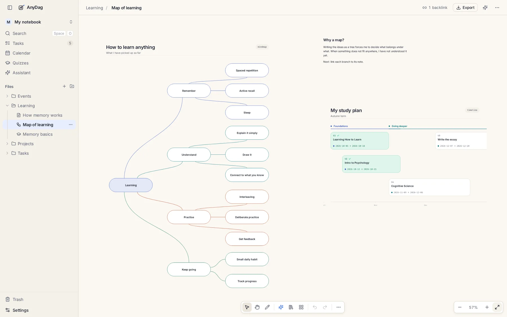
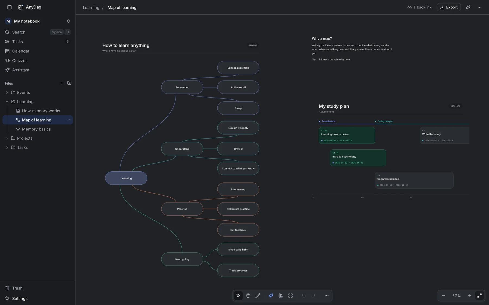
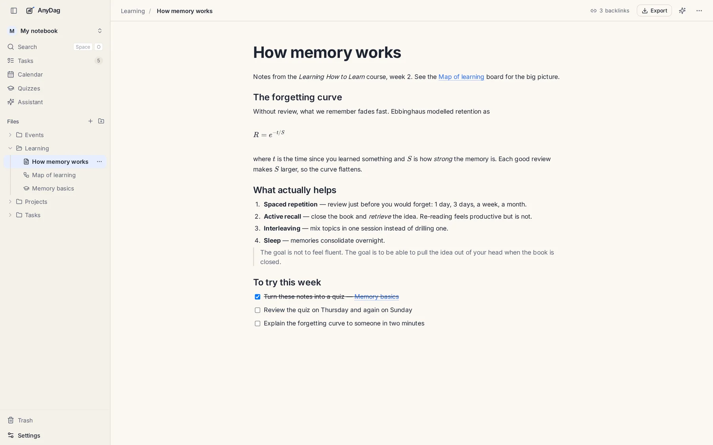
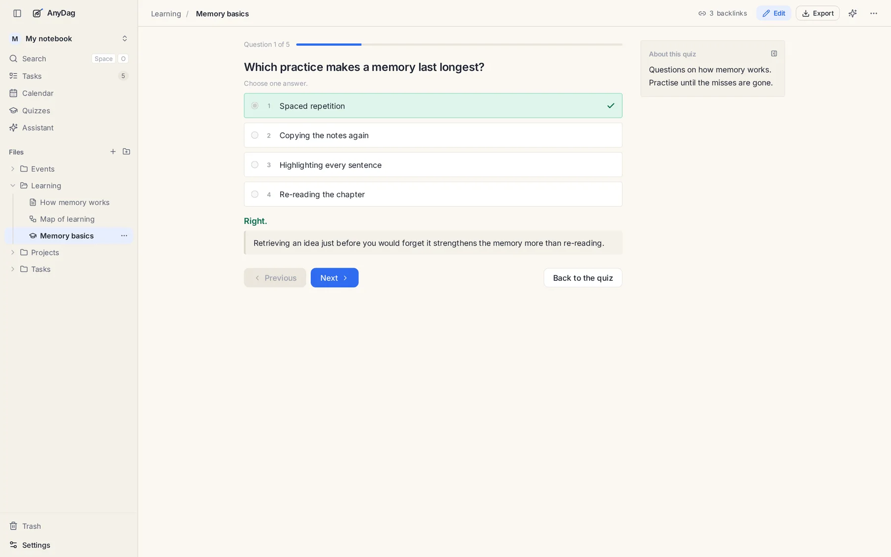
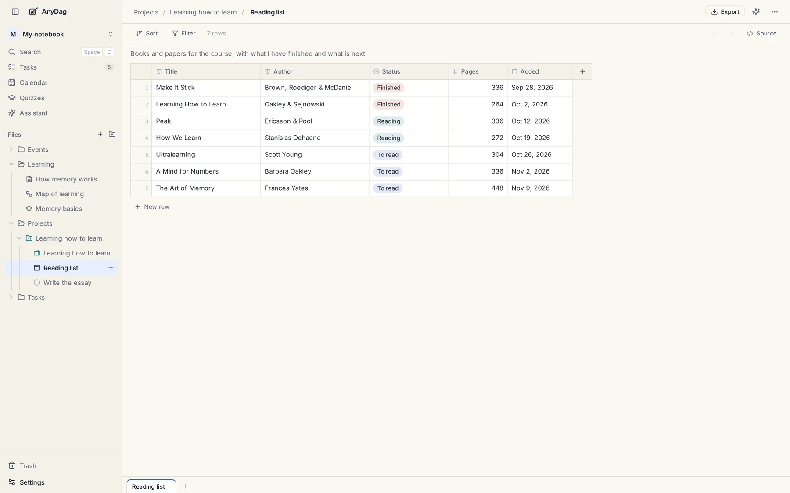
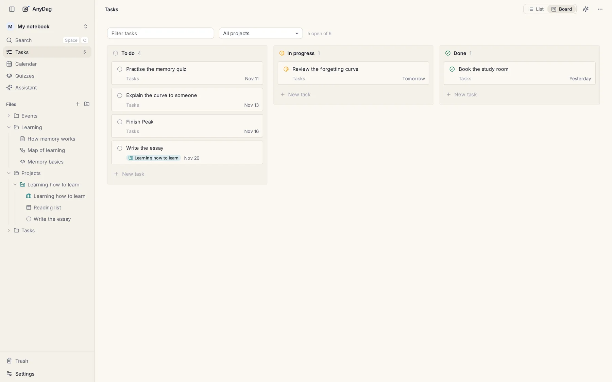
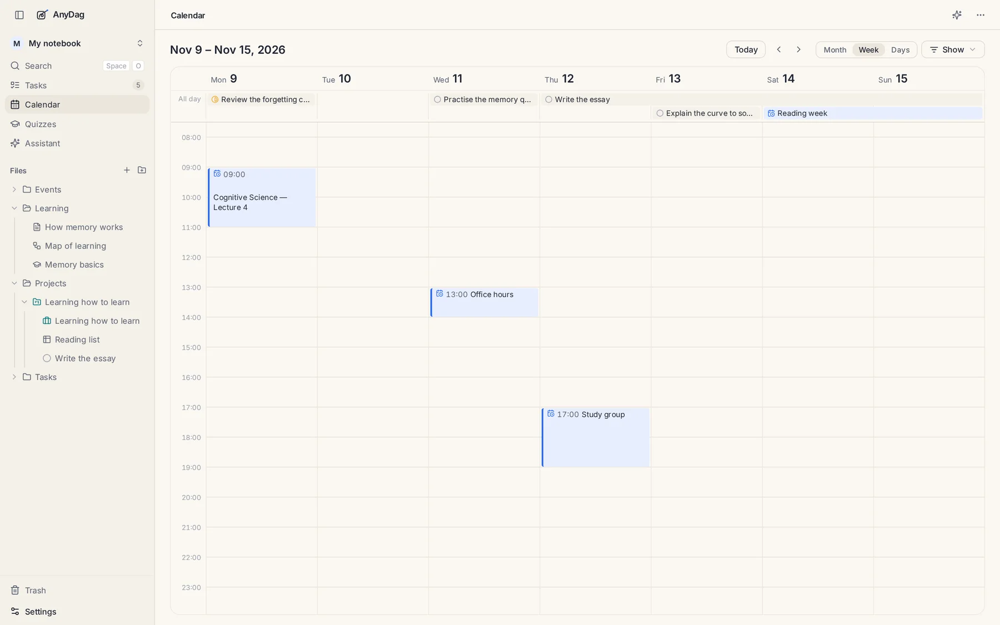

Notes that stay Markdown
Headings, checklists, equations, pictures and PDFs. Every note is a .md file
you can open in any other editor, back up, or put in git.
Free · open source · local-first
AnyDag is a workspace for everything you learn and make: notes, mind maps, quizzes, tables, tasks and a calendar. It all lives in a folder on your computer, as plain files — and it works with the AI subscription you already pay for.
MIT licensed. No account. No cloud. No plan to charge you later.


One workspace, not five
Most people spread their learning across a notes app, a whiteboard, a flashcard app, a spreadsheet and a to-do list. AnyDag keeps them in one place, and every piece links to every other.
Headings, checklists, equations, pictures and PDFs. Every note is a .md file
you can open in any other editor, back up, or put in git.
Mind maps, flowcharts, timelines, sequence diagrams and charts. Write what is in it; AnyDag decides where everything goes. Fourteen diagram types, no dragging boxes.
Turn notes into quizzes and practise them. Mistakes brings back the questions you got wrong until they stay. Open questions, explanations and shuffle are all there.
Reading lists, trackers, vocabulary, a budget. Typed columns, filters, CSV import and export. The file is still a Markdown table underneath.
A to-do is a note with a status, so it can hold the material it needs. Group notes into projects, then see the week as a calendar of events and work that is due.
Find any word in any note, board, quiz or table. Link with [[double brackets]];
links survive renames, and every document shows what links back to it.
A look around
Write, map it out, test yourself, keep the reading list, and plan the week — without moving your work between apps.





Open source. Free. Yours.
AnyDag is MIT licensed. There is no paid tier, no subscription and no cloud account — and no intention to put one between you and your own notes. The code is yours to read, change and run.
Bring your own AI
AnyDag has no AI service of its own and no AI subscription to sell you. It runs on the Claude Code or OpenCode you are already signed in to, or an API key you already have.
# connect Claude Code to a vault
claude mcp add anydag -- anydag mcp --vault ~/Notes
# then, in the agent
> draw a mind map of chapter 3
> make a quiz from my biology notes
> file these three readings as tasksThe agent writes a file. AnyDag redraws the page.
Take it home
Free, open source, and yours. Every button goes to the latest release on GitHub, where you can pick the file for your computer.
The latest version for Linux, Windows and macOS.
Your platform
AppImage · x64
Download, then chmod +x and run it.
Your platform
Installer · x64
Run the installer. SmartScreen asks once.
Download for WindowsYour platform
Apple Silicon · arm64
Drag it to Applications, then right-click → Open.
Download for Apple SiliconYour platform
Intel · x64
Drag it to Applications, then right-click → Open.
Download for Intelchmod +x AnyDag-*.AppImage
./AnyDag-*.AppImageDownload AnyDag-Setup-<version>.exe and run it. If SmartScreen says Windows protected your PC, choose More info → Run anyway. It installs for your user only.
Open the disk image and drag AnyDag to Applications. The first time, right-click the app → Open → Open. The builds are not signed with a certificate yet.
Prefer the terminal? anydag serve ~/Notes opens the same workspace in your
browser. Or read the install guide
and build it from source.
No account. No cloud. Just a folder, a canvas and the AI you already chose.
Download AnyDag